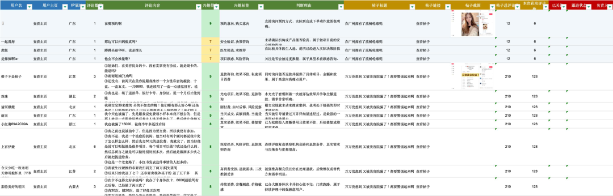
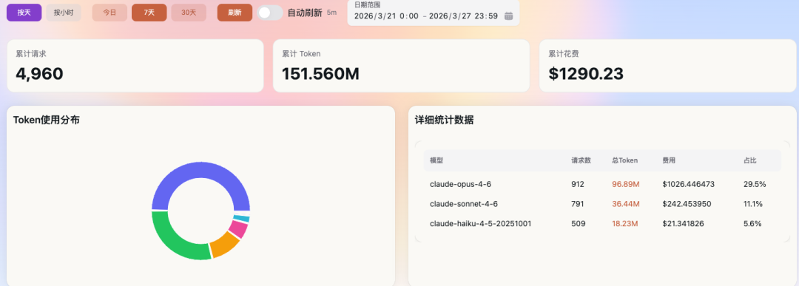

大家好，这里是 AGI智码。
专注于AI技术前沿分享，用最接地气的话讲最前沿的科技是我的专长，让每个人都能玩转AI是我的初心~
前言
做医美行业的朋友应该都有感触——每天运营同事在小红书、抖音、微博、微信生态、好大夫等各种平台上翻帖子、看评论、找潜在客户。一个人一天能翻多少？50 篇帖子？100 条评论？还得肉眼判断这个人是不是真的想做热玛吉、是不是在我们的服务区域。
这件事效率太低了。
我之前写过一篇文章叫《未来最值钱的不是 OpenClaw，而是会养 OpenClaw 的人》，里面提到一个观点：
未来真正有价值的，不是工具本身，而是把业务流程封装成 Skill 的能力。
我领导给我立了个课题：用 OpenClaw 调用自动化 Skill，在小红书上围绕预设关键词做内容检索、评论提取和用户线索整理，形成标准化线索池，辅助团队做后续的合规触达与转化跟进。
为什么选小红书？它的评论区，意向密度太高了。
一条「这个热玛吉多少钱啊」，
一条「深圳有没有靠谱的机构推荐」，
一条「想做很久了，有没有姐妹踩过坑」
背后都可能是实打实的潜在客户。
但理想很丰满，现实嘛……全是坑。下面是我最终跑通的完整链路：
关键词输入 ↓ 搜索页加载 → 登录检测 → 扫码/Cookie → 状态持久化 ↓ 帖子列表 → 逐帖打开 → 二次登录检测 ↓ 人类化滚动 → 展开回复 → 状态对象提取 ↓ 脚本粗筛（规则去噪）→ AI 精筛（语义分析 + 意向评分） ↓ 16 列 Excel 潜客管理表 ↓ 经验沉淀 → site-patterns 更新 |
坑一：不是所有路都能走通
真正开始动手之前，我不是只盯着某一个技术栈硬冲，而是把这类自动化方案从下到上几乎摸了一遍。先看我踩完坑后总结的技术路线对比：
| L1 底层Python + CDP |
代表：autoclaw-cc/xiaohongshu-skills 优点：控制力极强，理论无天花板 缺点：开发复杂，需关闭浏览器起调试实例，用户体验差 适合：极客/开发者自用 |
| L2 封装层Playwright / Puppeteer |
代表：主流自动化方案 优点：稳定、可控、可工程化 缺点：需要写脚本，有一定开发门槛 最终选择：生产级 Skill 开发 |
| L3 智能层AI 浏览器代理 |
代表：Browser Use / Agent Browser 优点：启动快、上手轻、演示效果好 缺点：「抽卡式执行」，稳定性靠运气 适合：探索式任务、Demo 演示 |
| L4 通用层通用型 Skill |
代表：web-access 类 优点：灵活，适合开放式探索 缺点：太通用，强流程业务难驾驭 适合：临时性网页理解 |
但问题在于：纸面上都能做，不代表落到小红书这种平台上都真的能跑通。
小红书叠加了登录态、SPA 动态渲染、懒加载评论、展开子回复、反自动化检测、Cookie 失效、搜索页风控——一层套一层。
第一个尝试：Python + CDP
这类方案要求浏览器以远程调试模式启动，绑定 9222 端口。如果你本机 Chrome 已经开着，它会要求你先关掉，再用带 remote-debugging 参数的方式重新启动。
重新拉起的那个浏览器，看起来像一台「刚装好」的新 Chrome——没有你原来的标签页、没有登录态、没有浏览历史。
其实不是数据被清掉了，而是你进入了一个新的调试实例。
但这件事虽然技术上可解释，用户体验上却极不友好。只要一个方案让使用者每次运行前都要先克服心理障碍，它就很难推广给运营团队。
https://github.com/autoclaw-cc/xiaohongshu-skills
第二个尝试：Playwright
最大优点：稳定、可控、可工程化。
只要脚本写得足够严谨，执行过程就是按部就班的：打开页面、等待元素、点击按钮、提取数据、处理异常。它更像一条写清楚了就能重复跑通的流水线。
https://github.com/lackeyjb/playwright-skill
第三个尝试：AI 应用层浏览器代理
但它有点像「抽卡式执行」。同样一个任务，这次走通，下次可能在某一步理解偏了。
在小红书这种强动态、强风控的平台上，只要有一步判断飘了，后面整条链路都会漂移。
AI 适合做「规划」和「理解」，但浏览器自动化的核心执行链路，不能完全交给 AI 临场发挥。
https://github.com/vercel-labs/agent-browser
第四个尝试：通用型浏览器 Skill
像 web-access 这样的通用型 Skill 对开放式探索任务很灵活，但我要做的是一条强流程业务链路。
这类任务最怕的不是「不会思考」，而是「思考太多」。它更适合探索，不适合收口。
https://github.com/eze-is/web-access
最终选择
探索用 AI 代理 → 灵活但不稳定 -> ❌ 淘汰
用 Playwright Skills → 稳定且可工程化 -> ✅ 选取
经验用 site-patterns → 让 Skill 越跑越聪明，两者结合才是完整答案。
坑二：登录不是「扫个码」那么简单
真正让我头疼的，不是抓取本身，而是登录。放到小红书的自动化场景里，登录是一连串会互相影响的问题链：
首页已登录？ ├── 是 → 跳转搜索页 → 搜索页还认你的登录态吗？ │ ├── 认 → 继续采集 │ └── 不认 → 弹出登录框 │ ├── 验证码 → 失败一次就可能被锁 │ └── 扫码 → 无头模式下二维码会「假死」 |
第一个问题：登录态并不稳定。「你以为自己已经登录了」和「目标页面真正认可你的登录态」，在这里不是同一回事。
第二个问题：验证码登录有频率限制。如果第一次登录流程没跑顺，第二次再去请求验证码，就可能触发频率限制，把手机号暂时锁住。
第三个问题：无头模式下二维码会「假死」。脚本截下来的码看起来是对的，实际上已经失效。这类问题不报错，表面上流程完整，但本质上你拿到的是一张「假码」。
最后我对登录链路的处理，已经不是单点修补，而是整套状态管理——登录状态管理六步法：
其中第 ③ 步看起来简单，但你不做这一步，线上跑着跑着就会莫名掉登录——Cookie 还在，只是过期了。
const validCookies = cookies.filter(c => !c.expires || c.expires === -1 || c.expires > Date.now() / 1000); |
做到这一步，登录才算真正被驯服。
坑三：评论不是滚到底就能拿全
解决了登录，我以为后面就是体力活：打开帖子，往下滚，拿评论。结果现实给了我第二记闷棍——小红书的评论，根本不是「滚到底」就能拿全的。
我在评论采集上经历了三个阶段的进化，每一阶段都是被逼出来的：
| 阶段一模拟滚动 + DOM 提取 |
| 问题：只能拿到主评论，子回复全丢了 |
| 阶段二滚动 + 点击「展开回复」+ 监听网络接口 |
| 问题：展开了、也监听了，数据还是不全 |
| 阶段三直接读取前端状态对象（React 状态管理） |
| 突破： 不从 DOM 捡碎片，从数据中枢直接取 |
关键转折点是发现小红书前端是 React 架构——很多关键数据在初始化时就注入到了状态变量 window.__INITIAL_STATE__ 里。
与其苦苦从 DOM 捡碎片，不如直接读前端状态管理里已经组织好的评论数据。这一下直接跳了一个层级。
但还没结束：你不能滚成机器人
警告：你成功抓全数据的那一刻，也可能正是账号被风控盯上的那一刻。
所以我设计了一个三速滚动状态机：正常速度、慢速（仔细读）、快速（快速扫），三种模式随机切换。
每次滚动不是一次性滑到位，而是分 1–3 次微推完成，每次之间有 300–700ms 的随机延迟，加上 ±50px 的抖动：
// 单次滚动分解为多次微推——让机器人看起来像个手滑的人类 let pushCount = largeMode ? 3 + randomInt(0, 2) : randomInt(1, 3); for (let i = 0; i < pushCount; i++) { const jitter = randomInt(-50, 50); await page.evaluate((dist) => { window.scrollBy({ top: dist, behavior: "smooth" }); }, scrollDist / pushCount + jitter); await sleep(randomInt(DELAYS.HUMAN_DELAY.min, DELAYS.HUMAN_DELAY.max)); } |
评论采集的难点从来都不是「能不能滚」，而是这四件事必须同时成立：
重点：少任何一个，这条链路都不算真的跑通。
坑四：被反爬检测了
滚动问题解决了，但如果浏览器本身被识别为自动化工具，一切白搭。我的处理方式不是「赌某一个技巧能骗过去」，而是做了四层伪装：
| L1 协议层删除 cdc_ 开头自动化标记，伪造 chrome.runtime → 对抗 navigator.webdriver 检测 |
| L2 指纹层随机 viewport（±20px）、UA 轮换 → 对抗浏览器指纹固定 |
| L3 环境层伪造 plugins、languages、hardwareConcurrency、deviceMemory → 对抗环境信息缺失检测 |
| L4 行为层人类化滚动、随机等待、速度分层 → 对抗行为模式异常检测 |
// L1：清除自动化痕迹 for (const key of Object.keys(window)) { if (key.match(/^cdc_/)) delete window[key]; } window.chrome = { runtime: { connect: () => {}, sendMessage: () => {} } }; // L2：视口抖动 const viewport = { width: 1280 + randomInt(-20, 20), height: 800 + randomInt(-20, 20) }; |
提示：哲学就是：打不过就假装。不是去破解检测算法，而是让你的浏览器看起来和真人的一模一样。
灵光一闪：两阶段过滤架构
评论拿到了，但原始评论里全是噪音——作者回复、纯表情、纯 @、广告引流、无意义互动……
如果一股脑扔给大模型分析，浪费 token 不说，还会严重干扰判断。
所以我做了一个两阶段过滤架构：
| 第一阶段脚本粗筛（规则引擎）原始评论 100% |
过滤：作者自己的回复 / 纯表情纯 @ / 广告引流关键词 / 中文字符不足 特点：零成本、快、稳定 效果：过滤 40%–60% 噪音，输出有效评论约 40%–60% |
| 第二阶段AI 精筛（语义分析）有效评论 40%–60% |
判断：是否有购买/合作意向？是否有深度相关讨论？ 输出：意向评分（0–100）+ 判断理由 效果：筛出高价值线索 5%–15%，输出到 Excel 线索池 |
比如一句「姐妹们深圳有没有靠谱的热玛吉机构推荐啊，想做好久了」，
AI 能识别出它同时具备「咨询」和「购买意向」，给出较高评分。
重点：脚本负责确定性地删除垃圾，AI 负责不确定性地理解语义。一个是滤网，一个是判断器。分工清楚，成本可控。
别人不知道的秘密武器：站点经验
前面那些坑，解决的是「这次怎么跑通」。
site-patterns（站点经验） 解决的，是「下次怎么别再从零开始」。
我专门为小红书建了一份站点经验文档：references/site-patterns/xiaohongshu.md。它不是普通说明书，而是一份持续生长的站内经验库
执行过程中，只要发现新的选择器变化、新的陷阱、新的有效模式，就追加进去，附上日期标记。
URL 规则：搜索页参数格式、帖子页路由规则 选择器清单：评论区稳定选择器、展开按钮定位 登录信号：多信号交叉判断、Cookie 过期预过滤 反检测经验：有效的伪装组合、被识别时的表现特征 数据源定位：前端状态对象路径、接口返回格式 最后更新：附带日期标记，持续追踪页面变化 |
重点：代码决定它这次能不能跑，经验决定它下次还会不会翻车。
效果展示：从评论到线索池
最终输出不是一堆 JSON，也不是一份零散文本，而是一张能直接给运营团队用的 16 列 Excel 潜客管理表：
同一个用户在同一篇帖子下的多条评论会合并成一行，用 ①②③ 编号区分。得分高的线索自动高亮，运营拿到表格后，直接按分数排序开始跟进。

这时候，这个 Skill 才真正完成了从「自动抓数据」到「交付业务结果」的闭环。
最后的思考
小红书只是开始。
这套 Skill 真正有价值的地方，不只是它能抓小红书，而是它背后的整套结构已经跑通了：
搜索 → 采集 → 登录管理 → 评论展开 → 数据提取 → 去噪 → AI 分析 → 结果输出 → 经验沉淀 └──────────────── 经验反哺下一次执行 ←────────────────┘ |
这套结构，是可以迁移的。抖音评论区、微博超话、微信生态留言、好大夫问诊区……底层逻辑其实都差不多：围绕关键词找到正在讨论的人，再判断谁是最值得跟进的潜在客户。
不同平台，只是换了一套页面结构、反爬策略和状态管理方式。一旦你把「怎么驯服一个站点」这件事做成方法论，后面每多攻克一个平台，都是在给这套能力加壁垒。
所以我越来越相信那句话：未来最值钱的，不是 OpenClaw，而是会养 OpenClaw 的人。
真正把它做成生产级能力，成本结构完全不一样。无论是登录态管理、反风控处理还是 AI 精筛，难点都不在「这次跑通」，而在「下次还能稳定跑通」。
这背后消耗的不只是开发时间，还有持续调试和真实的模型调用成本——仅 token 这一项，往往就超过 1000 美元。
账单如图所示：

如果你对 OpenClaw 定制 Skill 开发感兴趣，或者有特定业务场景想做成自动化 Skill，欢迎联系我交流。